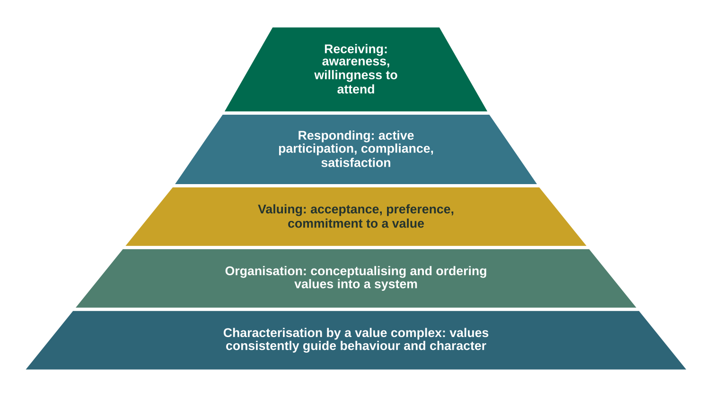
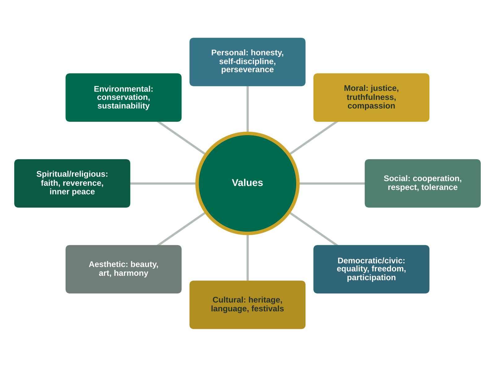
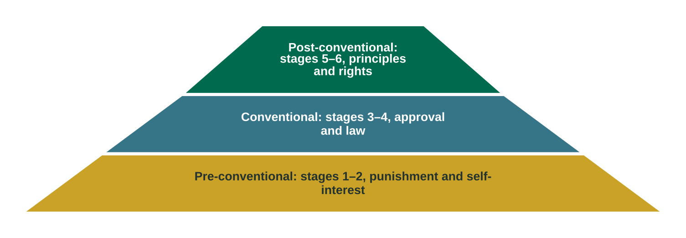
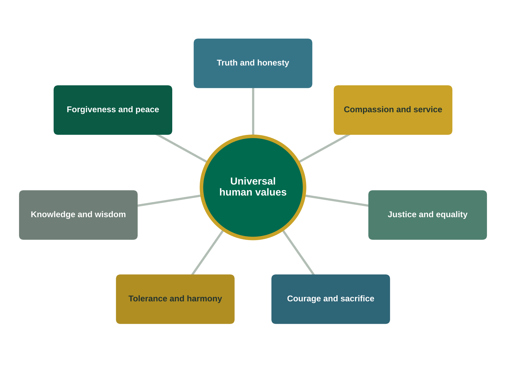

PC 121 Value Education
The nature of values, theories of moral development, values from great lives and religions, and values through schooling
Contents
About this course
Value education concerns the deliberate cultivation of the moral, social, civic, aesthetic and spiritual values that make people good individuals and good citizens. This course defines values and distinguishes them from attitudes, beliefs and norms; uses Krathwohl's affective taxonomy to show how values are learned; reviews classical and contemporary approaches, including Kohlberg's stages and values clarification; draws values from the lives of great people and from the major religions practised in Bangladesh; and shows how school curricula, children's literature, subjects and co-curricular activities can foster values.
Course objectives
Explain the concept, nature, scope, types and sources of values, and the conflicts between values.
Analyse the evolution of value education and contemporary theories of moral and value development.
Identify values exemplified by great lives and taught in the major religions.
Design ways to develop values through curricula, literature, subjects and co-curricular activities in Bangladesh.
Each unit follows the official syllabus order. Read the narrative first, then the Key point boxes, then test yourself with the Exam focus questions.
Golden boxes = must-remember ideas. Teal boxes = definitions and study tips. Green boxes = Bangladesh context.
The final chapter is a question bank (MCQs with answers, short and broad questions) in the style of university examinations, followed by full references in APA 7th style.
Statistics on enrolment, budgets and policies change every year. Before an exam, check the latest BANBEIS, DPE, UGC and UNESCO figures.
Unit 1: Fundamentals of Value Education
1.1 Basic concept
The word value comes from the Latin valere, "to be strong, to be worth". A value is an enduring belief about what is desirable, good or worthwhile that guides choices and behaviour.
Value: "An enduring belief that a specific mode of conduct or end-state of existence is personally or socially preferable to an opposite or converse mode of conduct or end-state of existence" (Rokeach, 1973, p. 5).
Value education is the deliberate process of helping learners understand, internalise and act upon values. Halstead and Taylor (2000) define values education as "the principles and fundamental convictions which act as general guides to behaviour, the standards by which particular actions are judged as good or desirable", and their transmission in schools.
1.2 Nature and scope
Nature: values are learned (not innate), relatively enduring, hierarchical (organised into priorities), emotionally charged, both personal and shared, culturally influenced, and expressed in behaviour.
Scope: moral values, social values, civic and democratic values, cultural values, aesthetic values, environmental values, spiritual and religious values, professional and work values, and universal human values (human rights, peace, tolerance).
1.3 Taxonomy of affective learning and learning values
Krathwohl, Bloom and Masia (1964) described how values are internalised in five levels:

Figure 1. Krathwohl's taxonomy of the affective domain: internalisation increases towards the base
| Level | What the learner does | Example (value: honesty) |
|---|---|---|
| Receiving | Becomes aware of the value | Listens to a story about honesty |
| Responding | Reacts, participates | Answers questions about why the character was honest |
| Valuing | Accepts and prefers the value | Chooses to return a lost pen and explains why |
| Organisation | Integrates it with other values | Weighs honesty against loyalty to a friend who cheated |
| Characterisation | Lives by it consistently | Is known by peers and teachers as reliably honest |
Value education succeeds only when learners move beyond receiving and responding to valuing and characterisation, which requires experience, reflection and practice, not just preaching.
1.4 Differentiating values from other affective constructs
| Construct | Definition | Relation to values |
|---|---|---|
| Belief | A proposition accepted as true ("Hard work leads to success") | Values are beliefs about what is desirable |
| Attitude | A learned predisposition to respond favourably or unfavourably to an object, person or idea | Narrower and more specific; values underlie attitudes |
| Interest | Preference for an activity | Less enduring; can be shaped by values |
| Norm | A social rule or expectation about behaviour | Norms are external and group-based; values are internal standards |
| Ideal | A conception of perfection or a standard to aspire to | The highest form of a value |
| Morals | Principles concerning right and wrong conduct | Moral values are a subset of values |
| Ethics | The systematic study of morality; codes of conduct | Ethics reflects on and justifies values |
| Virtue | A settled disposition of character to act well (Aristotle) | A value internalised as a character trait |
1.5 Types of values

Figure 2. Types of values
Other classifications:
Rokeach (1973): terminal values (desirable end-states, e.g. freedom, equality, wisdom, a world at peace) and instrumental values (preferred modes of behaviour, e.g. honest, responsible, courageous, helpful).
Spranger (1928): theoretical, economic, aesthetic, social, political and religious values.
Schwartz (1992): ten universal values (self-direction, stimulation, hedonism, achievement, power, security, conformity, tradition, benevolence, universalism) arranged in a circle by compatibility and conflict.
Intrinsic (valued for their own sake) and extrinsic/instrumental (valued as means).
Universal (human dignity, truth, non-violence) and culture-specific values.
1.6 Sources of values
Family (the primary source); religion; school and teachers; peer group; community and culture; mass and social media; literature and the arts; national ideals and the constitution; great personalities; personal experience and reflection.
1.7 Competition and conflict of values
Values can compete or conflict at several levels:
Intrapersonal conflict: within one person, e.g. honesty versus loyalty to a friend, or ambition versus family duty.
Interpersonal conflict: between individuals with different priorities.
Intergenerational conflict: between traditional values of parents and modern values of youth (e.g. arranged versus self-chosen marriage, career choices).
Intercultural / social conflict: between groups, religions or cultures, or between tradition and modernity (e.g. individualism versus collectivism).
Institutional conflict: between school values (cooperation) and examination culture (competition).
Resolving conflicts in education: moral dilemma discussions, values clarification, perspective-taking, dialogue, reference to shared universal values and human rights, and the development of moral reasoning.
Unit 2: Evolution and Approaches of Developing Values
2.1 Evolution of value education
Greek origin
Socrates: "virtue is knowledge"; the examined life; dialogue to discover moral truth.
Plato: education to develop the four cardinal virtues (wisdom, courage, temperance, justice) in the ideal state.
Aristotle: virtue as a golden mean developed through habituation; moral education as character formation for eudaimonia (flourishing). This is the root of contemporary character education.
Religious tradition
Throughout history, moral education was inseparable from religious education: in the Vedic gurukul, Buddhist viharas, Islamic maktabs and madrasahs, and Christian church schools. Religious texts, exemplary lives and rituals were the main means of transmitting values. Secularisation in modern states led to debates about whether and how values can be taught apart from religion, and many systems (including Bangladesh's "Religion and Moral Education") combine both.
Modern developments
*Durkheim (1925), Moral Education:* three elements of morality: the spirit of discipline, attachment to social groups, and autonomy (understanding the reasons for rules).
*Piaget (1932), The Moral Judgment of the Child:* heteronomous morality (rules as fixed, from authority; judging by consequences) moving to autonomous morality (rules as social agreements; judging by intentions).
The character education movement (early 20th century and revived from the 1990s), values clarification (1960s–70s), cognitive-developmental moral education (Kohlberg), the ethics of care (Noddings), and social-emotional learning.
2.2 Contemporary theories and approaches
(i) Theory of social morality
Morality is learned through socialisation into the norms and values of society. Durkheim saw morality as social in origin: society is the source of moral authority, and the school's task is to attach the child to society and its rules. Social learning theory (Bandura) adds that values are learned by observing and imitating models and through reinforcement. Educational implication: teachers and institutions must model values; the school's ethos and rules, the hidden curriculum, and community participation matter as much as lessons.
(ii) Theory of personal development
Values develop as part of the growth of the whole person and the self. Humanistic psychologists (Rogers, Maslow) argue that, in a climate of acceptance, empathy and genuineness, people naturally move towards self-actualisation and prosocial values. Erikson's psychosocial stages link virtues to resolving each stage (hope, will, purpose, competence, fidelity, love, care, wisdom). Educational implication: supportive relationships, self-reflection, autonomy and opportunities for responsibility.
(iii) Values clarification
Developed by Louis Raths, Merrill Harmin and Sidney Simon in Values and Teaching (1966). Rather than imposing values, teachers help students clarify their own values through a seven-step valuing process:
")
Figure 3. The valuing process in values clarification (Raths, Harmin & Simon, 1966)
Strategies: clarifying responses, values continuum, rank ordering, values voting, "twenty things I love to do", and values sheets. Critique: risks moral relativism ("all values are equally valid") and gives little guidance on right and wrong (Lockwood, 1978; Kirschenbaum later proposed comprehensive values education).
(iv) Kohlberg's theory of moral development
Lawrence Kohlberg (1958, 1981) extended Piaget. Using moral dilemmas (e.g. the Heinz dilemma: should Heinz steal a drug he cannot afford to save his dying wife?), he analysed the reasoning behind answers and identified three levels with six stages:
| Level | Stage | Orientation | Typical reasoning |
|---|---|---|---|
| Pre-conventional (most children under 9) | 1. Obedience and punishment | Avoid punishment | "He shouldn't steal because he'll go to jail." |
| 2. Individualism and exchange (instrumental) | Self-interest, fair deals | "He should steal if he needs his wife." | |
| Conventional (most adolescents and adults) | 3. Good interpersonal relationships ("good boy/good girl") | Approval of others | "A good husband would steal to save her." |
| 4. Maintaining social order (law and order) | Duty, laws, authority | "Stealing is against the law; society would collapse." | |
| Post-conventional (a minority of adults) | 5. Social contract and individual rights | Laws are social agreements that can be changed | "The right to life is above property law." |
| 6. Universal ethical principles | Justice, dignity, conscience | "Life has a universal value; he must act on principle." |

Figure 4. Kohlberg's levels of moral reasoning, highest at the top
Educational implications: moral dilemma discussions (the "Blatt effect": discussion with peers at a slightly higher stage promotes development), the just community school (democratic participation in rule-making), and attention to moral reasoning rather than indoctrination. Critiques: Carol Gilligan (1982) argued that the theory is biased towards a male "justice" orientation and neglects the "care" orientation; it focuses on reasoning rather than behaviour; and stage 6 is rarely found and may be culturally biased (Snarey, 1985).
Kohlberg is one of the most frequently examined theories in this course. Learn the six stages with one Heinz-style example each, and Gilligan's critique.
Other approaches
Character education (Lickona, 1991): moral knowing, moral feeling and moral action; respect and responsibility as core values; whole-school approach.
Ethics of care (Noddings, 1984): modelling, dialogue, practice and confirmation.
Inculcation: direct teaching and reinforcement of values (effective for basic norms but risks indoctrination).
Moral reasoning, analysis and action learning approaches (Superka et al., 1976 typology: inculcation, moral development, analysis, clarification, action learning).
Living Values Education Programme (UNESCO-supported, 1996 onward): twelve values (peace, respect, love, responsibility, happiness, cooperation, honesty, humility, tolerance, simplicity, freedom, unity).
2.3 Value mediation through different tiers of the curriculum

Figure 5. How values are mediated through different tiers of the curriculum
National tier: the Constitution, National Education Policy 2010 and NCF 2021 state national values (patriotism, the spirit of the Liberation War, democracy, secularism, humanism, gender equality, respect for diversity).
Curriculum tier: values are built into aims, competencies, subject outcomes and cross-cutting issues.
Textbook tier: content, stories, images and activities carry values (positively or, sometimes, stereotypes).
School tier: ethos, rules, assemblies, celebrations, discipline policies and the hidden curriculum.
Classroom tier: teacher behaviour, relationships, methods (cooperative learning develops cooperation), and responses to students.
Unit 3: Development of Values from the Study of Great Lives
Studying the lives of great people gives learners concrete role models and stories that make abstract values memorable. For each person below, note the key events, core values and classroom use.
| Person | Life sketch | Core values exemplified |
|---|---|---|
| Hazrat Muhammad (peace be upon him) (570–632 CE) | The Prophet of Islam; known even before prophethood as Al-Amin (the trustworthy); established the Charter of Madinah, which guaranteed rights to different communities | Truthfulness, trustworthiness, justice, mercy, compassion for the poor, orphans and animals, forgiveness (the forgiveness of the people of Makkah), tolerance, simplicity, respect for women and knowledge ("Seeking knowledge is obligatory for every Muslim") |
| Gautama Buddha (c. 563–483 BCE) | Prince Siddhartha who renounced luxury to seek the end of suffering; attained enlightenment at Bodh Gaya | Non-violence (ahimsa), compassion (karuna), loving-kindness (metta), the Middle Path, self-discipline, mindfulness, equality |
| Jesus Christ (c. 4 BCE–30 CE) | Founder of Christianity; taught through parables (the Good Samaritan, the Prodigal Son) and the Sermon on the Mount | Love of God and neighbour, forgiveness, humility, service to the poor and sick, peace-making, the Golden Rule |
| Bangabandhu Sheikh Mujibur Rahman (1920–1975) | Leader of the Six-Point Movement and the independence struggle; the 7 March 1971 speech; founding father of Bangladesh | Patriotism, courage, sacrifice, democracy, secularism, love for people, commitment to justice and the mother tongue |
| Begum Rokeya (1880–1932) | Pioneer of women's education among Bengali Muslims; author of Sultana's Dream; founded a girls' school | Gender equality, courage, perseverance, social reform, the value of education |
| Ishwar Chandra Vidyasagar (1820–1891) | Educator and social reformer in Bengal; simplified Bangla prose and wrote Barnaparichay; campaigned for widow remarriage (Hindu Widows' Remarriage Act, 1856) and girls' education | Compassion, humanism, honesty, self-reliance, generosity, rational reform, dignity of women |
| Rabindranath Tagore (1861–1941) | Poet, Nobel laureate (1913), founder of Shantiniketan and Visva-Bharati; composer of the national anthems of Bangladesh and India | Love of nature, humanism, creativity, freedom, internationalism, beauty, harmony |
| Kazi Nazrul Islam (1899–1976) | National Poet of Bangladesh; the "Rebel Poet" (Bidrohi); wrote against oppression and communalism | Courage, rebellion against injustice, communal harmony, equality, love of humanity |
| Confucius (551–479 BCE) | Chinese teacher-philosopher | Benevolence (ren), propriety, filial piety, respect, self-cultivation, lifelong learning |
| Lalon Shah (c. 1774–1890) | Baul mystic poet of Kushtia; songs questioning caste and religious divisions ("Shob loke koy Lalon ki jat songsare" – "Everyone asks what Lalon's caste is") | Humanism, equality beyond caste and creed, tolerance, simplicity, spiritual search |
| Mother Teresa (1910–1997) | Founder of the Missionaries of Charity in Kolkata; Nobel Peace Prize (1979); served in Bangladesh after 1971 | Compassion, service to the poorest, humility, dignity of every person |
| Nelson Mandela (1918–2013) | Anti-apartheid leader imprisoned for 27 years; first Black president of South Africa; Nobel Peace Prize (1993) | Forgiveness, reconciliation, perseverance, equality, justice, leadership ("Education is the most powerful weapon which you can use to change the world") |
| Raja Ram Mohan Roy (1772–1833) | "Father of the Indian Renaissance"; founded the Brahmo Samaj (1828); campaigned against sati (abolished 1829) and for modern education | Rationalism, social reform, women's rights, religious tolerance, freedom of the press |

Figure 6. Universal values shared across great lives
Study a "great life" through a story, a short video or a drama, then ask yourself discussion questions ("What would I have done?"), write a short values reflection and try a small action project (e.g. a kindness week inspired by Mother Teresa). This is how learners move up Krathwohl's taxonomy from receiving to valuing.
Unit 4: Development of Values from the Study of Religions
4.1 Common ground
All major religions teach a version of the Golden Rule ("treat others as you would like to be treated"), honesty, compassion, justice, charity, self-discipline and respect for life. Teaching these shared values builds interfaith understanding and social harmony, which is vital in plural Bangladesh. Article 41 of the Constitution protects freedom of religion, and religious instruction must not be imposed on students of another faith.
4.2 Islam
Core beliefs (tenets): Tawhid (the oneness of Allah); prophethood (Risalah), with Muhammad (peace be upon him) as the final prophet; the Qur'an as revelation; angels; the Day of Judgement (Akhirah); divine decree.
Five Pillars: Shahadah (declaration of faith), Salah (five daily prayers), Zakat (obligatory charity), Sawm (fasting in Ramadan), Hajj (pilgrimage).
Values: justice (adl), mercy (rahmah), honesty and trustworthiness (amanah), patience (sabr), gratitude (shukr), charity, brotherhood, respect for parents, knowledge, cleanliness ("cleanliness is half of faith"), moderation, care of the environment as stewardship (khalifah), and the sanctity of life ("whoever saves one life, it is as if he had saved all mankind", Qur'an 5:32).
4.3 Hinduism (Sanatana Dharma)
Core beliefs: Brahman (ultimate reality) and Atman (the self); dharma (duty, righteousness); karma (actions and their consequences); samsara (cycle of rebirth) and moksha (liberation); scriptures including the Vedas, Upanishads, Bhagavad Gita, Ramayana and Mahabharata.
*Four aims of life (purusharthas): dharma, artha (prosperity), kama (pleasure) and moksha*.
Values: truth (satya), non-violence (ahimsa), selfless action (nishkama karma, Gita), duty, self-control, respect for parents and teachers (matri devo bhava, pitri devo bhava, acharya devo bhava), hospitality, tolerance ("Ekam sat vipra bahudha vadanti" – "Truth is one; the wise call it by many names").
4.4 Buddhism
Core beliefs: the Four Noble Truths (life involves suffering; suffering arises from craving; suffering can cease; the path to its cessation) and the Noble Eightfold Path (right view, intention, speech, action, livelihood, effort, mindfulness, concentration); karma; nirvana; the Three Jewels (Buddha, Dhamma, Sangha).
*Five Precepts (Pancha Sila):* abstain from killing, stealing, sexual misconduct, false speech and intoxicants.
Values: compassion, loving-kindness, non-violence, mindfulness, equanimity, generosity (dana), moderation (the Middle Path).
4.5 Christianity
Core beliefs: one God as the Trinity (Father, Son and Holy Spirit); Jesus Christ as the Son of God and Saviour; the Bible (Old and New Testaments); salvation by grace; resurrection.
Teachings: the Ten Commandments; the two great commandments (love God; love your neighbour as yourself); the Sermon on the Mount and the Beatitudes ("Blessed are the peacemakers").
Values: love (agape), forgiveness, humility, charity, service, honesty, peace, care for the poor and sick.
| Shared value | Islam | Hinduism | Buddhism | Christianity |
|---|---|---|---|---|
| Golden Rule | "None of you truly believes until he loves for his brother what he loves for himself" (Hadith) | "One should never do to another that which one would regard as injurious to oneself" (Mahabharata) | "Hurt not others in ways that you yourself would find hurtful" (Udanavarga) | "Do to others as you would have them do to you" (Luke 6:31) |
| Charity | Zakat, Sadaqah | Dana | Dana | Almsgiving |
| Non-violence and mercy | Mercy, sanctity of life | Ahimsa | Ahimsa, karuna | Love of enemies, peace-making |
| Honesty | Amanah | Satya | Right speech | "You shall not bear false witness" |
| Self-discipline | Fasting, prayer | Self-control, yoga | Precepts, meditation | Prayer, fasting |
When teaching values from religions in a mixed classroom, emphasise shared values, respect differences, avoid comparisons that rank religions, and use authentic sources and voices from each community.
Unit 5: Development of Values through Schooling
5.1 Values in the school curricula of Bangladesh
NEP 2010 aims include moral and spiritual values, patriotism and the spirit of the Liberation War, humanism, secularism, gender equality, respect for all religions and cultures, and environmental consciousness.
Primary curriculum: terminal competencies include respect for parents and elders, honesty, cooperation, patriotism, respect for all religions, gender equality, environmental care and good habits.
Subjects carrying values explicitly: Religion and Moral Education (Islam, Hindu, Buddhist and Christian religion and moral education), Bangladesh and Global Studies, Bangla literature.
NCF 2021 includes values in its core competencies (e.g. responsible citizenship, empathy, respect for diversity) and introduced a subject on wellbeing (Shastho Surokkha).
Integrity strategy: the National Integrity Strategy (2012) promotes ethics in education institutions (e.g. integrity units, "honesty stores" in schools).
5.2 Values through children's literature
Stories, fables, folk tales, poems and biographies make values concrete and engaging. Examples: Aesop's fables and the Panchatantra (wisdom, honesty); Thakurmar Jhuli (Bengali folk tales); Tagore's stories and poems; Sukumar Ray's humour; Nazrul's poems for children (such as Lichu Chor); and modern Bangla children's books. Teaching strategies: storytelling, read-aloud with discussion questions, role-play, rewriting endings, and connecting stories to students' lives.
5.3 Values through school subjects
| Subject | Values that can be developed | Example activity |
|---|---|---|
| Science | Curiosity, honesty in reporting data, objectivity, scepticism, environmental responsibility, respect for life | Recording true results even when an experiment "fails"; a school tree-planting project |
| Mathematics | Accuracy, perseverance, logical thinking, fairness | Collaborative problem solving; fair sharing problems |
| Social science | Citizenship, democracy, tolerance, human rights, patriotism, global citizenship | Mock parliament; history of the Liberation War; projects on community problems |
| Language and literature | Empathy, aesthetic appreciation, cultural identity, communication | Reading and discussing stories and poems; letter-writing to a person in need |
| Music and arts | Beauty, creativity, cooperation, cultural heritage | Group performances on national days; art about environmental themes |
| Physical education | Sportsmanship, discipline, teamwork, fair play, health | Team games with reflection on fair play |
| Religion and moral education | Faith-based and universal moral values | Interfaith dialogue, service projects |
5.4 Values through co-curricular activities
Morning assembly (national anthem, oath, moral messages); celebrations of national days (Language Day, Independence Day, Victory Day) and religious and cultural festivals (Eid, Puja, Buddha Purnima, Christmas, Pohela Boishakh); debates; scouting, Girl Guides, Red Crescent and BNCC (service, discipline, leadership); sports (fair play); social service (blood donation, flood relief); environmental clubs; student councils (democracy, responsibility); and cultural programmes (heritage, cooperation).
5.5 Strategies for inculcating values in children
Modelling: teachers and parents as role models ("values are caught, not just taught").
Storytelling and biographies.
Moral dilemma discussions (Kohlberg).
Values clarification activities.
Cooperative learning and group projects.
Role-play and drama.
Service learning and community projects.
Reflection through journals and circle time.
Positive reinforcement and recognition of good behaviour.
A whole-school ethos with consistent rules, respect and fairness.
Partnership with families and communities.

Figure 7. Lickona's integrated model of good character: knowing, feeling and doing the good
Exam Preparation Bank
A. Multiple-choice questions
1. "An enduring belief that a specific mode of conduct or end-state is preferable" defines value according to:
(a) Krathwohl (b) Rokeach (c) Kohlberg (d) Raths
Show answer
Answer: (b)
2. The highest level of Krathwohl's affective taxonomy is:
(a) valuing (b) organisation (c) characterisation by a value complex (d) responding
Show answer
Answer: (c)
3. Terminal and instrumental values were distinguished by:
(a) Spranger (b) Rokeach (c) Schwartz (d) Allport
Show answer
Answer: (b)
4. Values clarification was developed by:
(a) Kohlberg and Gilligan (b) Raths, Harmin and Simon (c) Lickona (d) Durkheim
Show answer
Answer: (b)
5. The three processes of valuing are:
(a) knowing, feeling, acting (b) choosing, prizing, acting (c) receiving, responding, valuing (d) thinking, judging, doing
Show answer
Answer: (b)
6. "Good boy/good girl" orientation is Kohlberg's stage:
(a) 2 (b) 3 (c) 4 (d) 5
Show answer
Answer: (b)
7. Social contract orientation is stage:
(a) 3 (b) 4 (c) 5 (d) 6
Show answer
Answer: (c)
8. Gilligan criticised Kohlberg for neglecting:
(a) justice (b) care (c) reasoning (d) culture
Show answer
Answer: (b)
9. Heteronomous and autonomous morality are concepts of:
(a) Piaget (b) Kohlberg (c) Durkheim (d) Erikson
Show answer
Answer: (a)
10. "Virtue is knowledge" was taught by:
(a) Aristotle (b) Socrates (c) Plato (d) Confucius
Show answer
Answer: (b)
11. Lickona's model of character includes moral knowing, moral feeling and:
(a) moral reasoning (b) moral action (c) moral identity (d) moral judgement
Show answer
Answer: (b)
12. Hindu Widows' Remarriage Act (1856) is linked with:
(a) Raja Ram Mohan Roy (b) Vidyasagar (c) Tagore (d) Vivekananda
Show answer
Answer: (b)
13. The Brahmo Samaj was founded by:
(a) Vidyasagar (b) Raja Ram Mohan Roy (c) Keshab Chandra Sen (d) Debendranath Tagore
Show answer
Answer: (b)
14. The Noble Eightfold Path belongs to:
(a) Hinduism (b) Buddhism (c) Jainism (d) Sikhism
Show answer
Answer: (b)
15. Zakat is one of the:
(a) Five Pillars of Islam (b) Ten Commandments (c) Five Precepts (d) Four Aims of Life
Show answer
Answer: (a)
16. The poet who asked "what is Lalon's caste?" was:
(a) Nazrul (b) Lalon Shah (c) Hason Raja (d) Tagore
Show answer
Answer: (b)
B. Short-answer questions
Q1. Distinguish between values, attitudes and norms.
Q2. Explain Krathwohl's affective taxonomy with an example.
Q3. Distinguish terminal from instrumental values.
Q4. What are the sources of values?
Q5. Explain the seven steps of values clarification.
Q6. What is the "just community" approach?
Q7. What values can be learned from the life of Begum Rokeya?
Q8. Write three common values found in all major religions.
C. Broad questions
Q9. Discuss the concept, nature, types and sources of values. How can conflicts of values be resolved through education?
Q10. Trace the evolution of value education from Greek and religious traditions to contemporary approaches.
Q11. Critically evaluate Kohlberg's theory of moral development and its educational implications.
Q12. Compare values clarification with character education.
Q13. Discuss how the lives of great persons can be used to develop values among students.
Q14. Explain the common values taught by Islam, Hinduism, Buddhism and Christianity, and their importance for social harmony in Bangladesh.
Q15. How can school curricula, subjects and co-curricular activities develop values among students in Bangladesh?
References
Bandura, A. (1977). Social learning theory. Prentice Hall.
Durkheim, É. (1961). Moral education (E. K. Wilson & H. Schnurer, Trans.). Free Press. (Original work published 1925)
Gilligan, C. (1982). In a different voice. Harvard University Press.
Halstead, J. M., & Taylor, M. J. (2000). Learning and teaching about values: A review of recent research. Cambridge Journal of Education, 30(2), 169–202.
Kohlberg, L. (1981). Essays on moral development: Vol. 1. The philosophy of moral development. Harper & Row.
Krathwohl, D. R., Bloom, B. S., & Masia, B. B. (1964). Taxonomy of educational objectives: Handbook II. Affective domain. David McKay.
Lickona, T. (1991). Educating for character: How our schools can teach respect and responsibility. Bantam.
Lockwood, A. L. (1978). The effects of values clarification and moral development curricula on school-age subjects. Review of Educational Research, 48(3), 325–364.
Ministry of Education. (2010). National education policy 2010. Government of Bangladesh.
Noddings, N. (1984). Caring: A feminine approach to ethics and moral education. University of California Press.
Piaget, J. (1932). The moral judgment of the child. Kegan Paul.
Raths, L. E., Harmin, M., & Simon, S. B. (1966). Values and teaching. Charles E. Merrill.
Rokeach, M. (1973). The nature of human values. Free Press.
Schwartz, S. H. (1992). Universals in the content and structure of values. Advances in Experimental Social Psychology, 25, 1–65.
Snarey, J. R. (1985). Cross-cultural universality of social-moral development. Psychological Bulletin, 97(2), 202–232.
Superka, D. P., Ahrens, C., & Hedstrom, J. E. (1976). Values education sourcebook. Social Science Education Consortium.
Tillman, D. (2000). Living values: An educational program. Health Communications.
UNESCO. (2002). Learning to be: A holistic and integrated approach to values education for human development. UNESCO Bangkok.